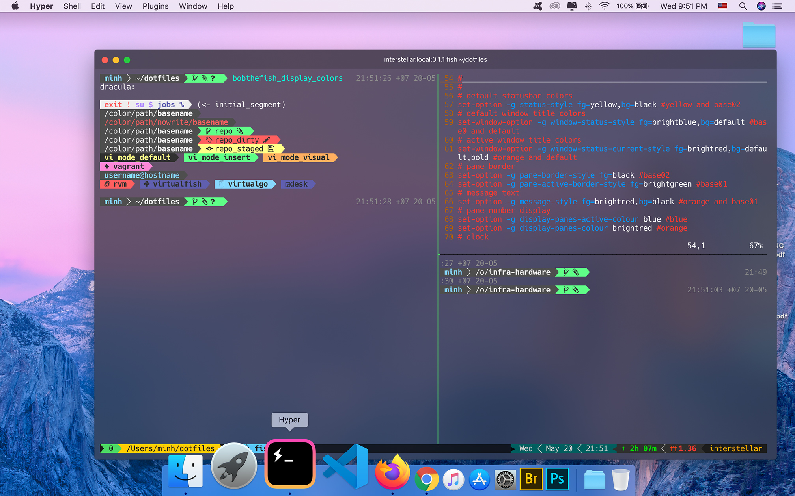

I don't know what is the best way to talk about myself but I'm sure that I'm a computer engineer, a pythonista, a Linux enthusiast and the the last one, I'm a photographer. Everyday, I try to simplify complicated stuffs, make the things just work, and enjoy my passion capturing the relive moments.
A set of pre-configuration of stuffs for personify working environment
Source
https://github.com/hnimminh/dotfiles

Monitor SIP server and Notify whenever downtime/latency detected.
Source
https://github.com/hnimminh/sip-healthcheck

A kind of open source software of comunication provide geo-distributed, scalable and high avaibility system.
Source
https://github.com/hnimminh/gokk (under development)
A daemon that protects the entity's virgo from unauthorised action
Source https://github.com/hnimminh/virgo (under development)